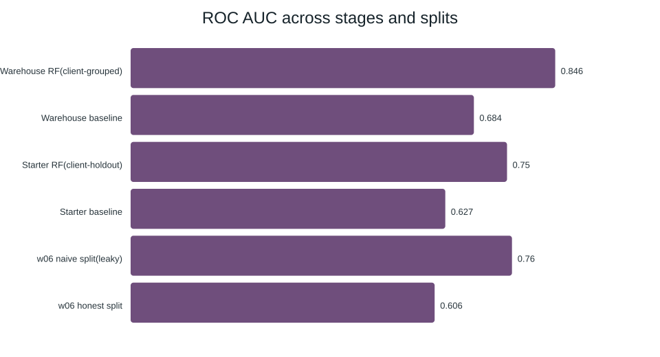

month=2026-03 cut of the gated warehouse release. A five-feature Random
Forest, evaluated on a client-grouped holdout (so no client's pages leak between train and test),
separated review-worthy pages from healthy ones clearly better than a transparent hand-written
baseline rule (warehouse-stage run: AUC 0.846 vs. 0.684; starter-dataset reference pipeline: AUC
0.750 vs. 0.627 baseline). The output is a ranked, reason-coded action queue —
decision-support for a human reviewer's prioritization, not an automated publishing or
ranking-prediction system.
Unit of analysis: one content item (page). Output: a
decline-risk / refresh-priority score (0–1) plus human-readable reason codes (e.g.
stale_visible_page, low_ctr_visible_page,
declining_with_demand). Action a human takes: an editor reads the
top of the ranked queue during a review cycle and decides whether to refresh, expand, or leave a
page alone — the model never edits or publishes anything itself. Cost of a wrong
call: a false positive wastes editorial time on a fine page; a false negative lets a
genuinely declining, still-visible page keep losing traffic un-reviewed. Both costs are bounded
and recoverable, which is why a precision-at-top-K framing fits better than a strict accuracy
target. ML helps because the portfolio is too large (30,000+ pages) for manual triage, and a
handful of simple, transparent signals (impressions, position, age, freshness) carry real,
measurable signal about which pages are worth a look first.
Used: data/raw/content_refresh_anonymized.csv (30,000
pseudonymized content items, 32 clients, trailing-90-day metrics) for the reference-pipeline
stage; a month=2026-03 cut of the gated Hugging Face warehouse release
(hf://datasets/FlyRank/internship-warehouse) for the earlier modeling stage. Both
are pseudonymized at the client/content level — no client names, URLs, or raw queries
appear anywhere in the project.
Deliberately excluded: trend_direction and trend_pct
are never features — the reference-pipeline label is derived directly from
trend_direction, so including either would leak the answer into the inputs
(re-confirmed clean in the validation-audit notebook). client_id /
content_id are used only to group the train/test split, never as model features.
ctr_march / clk_march were excluded from the warehouse-stage model for
the same reason — they are the label's own inputs.
Two transparent, rule-based baselines were built and beaten fairly (same data, same split, same metric as the model that followed each one): a reference-pipeline weighted score (visibility + freshness + position-opportunity + depth-gap, no model — ROC AUC 0.627, Precision@50 0.240), and a warehouse-stage "estimated extra clicks if fixed" rule (ROC AUC 0.684, Precision@50 0.08). Both models are Random Forests (compared against Logistic Regression and a Decision Tree), evaluated with a client-grouped split throughout so no client's pages ever leak between train and test.
| Stage | Split | Model | AUC | AP | P@50 | P@200 |
|---|---|---|---|---|---|---|
| Warehouse (ML-08) | client-grouped | Random Forest | 0.846 | 0.787 | 0.98 | 0.965 |
| Warehouse (ML-08) | client-grouped | baseline rule | 0.684 | — | 0.08 | — |
| Starter (reference pipeline) | client-holdout | Random Forest | 0.750 | 0.618 | 0.740 | — |
| Starter (reference pipeline) | client-holdout | baseline rule | 0.627 | 0.468 | 0.240 | — |
| Starter (before — naive split) | random (naive) | Random Forest | 0.760 | 0.772 | 0.920 | 0.895 |
| Starter (after — honest split) | client-grouped | Random Forest | 0.606 | 0.594 | 0.560 | 0.620 |

The naive-split bar (0.76) sits well above the honest client-grouped bar (0.61) on identical data and features — the gap is client memorization, not real skill.
A naive random 75/25 split (no grouping, 31 clients leaking across train and test) scored AUC 0.760 / Precision@50 0.92. The honest client-grouped split (zero client overlap) on the exact same data scored AUC 0.606 / Precision@50 0.56. The gap is itself the finding: a meaningful share of the naive split's apparent precision was the model recognizing clients it had already seen, not real discrimination.
In the warehouse-stage model, imp_march dominates feature importance (0.793)
— directionally sensible, but a single feature carrying 79% of importance is a disclosed
limitation, not a hidden one. In the reference-pipeline model, importance spreads more evenly
across 10+ features (top: days_with_impressions 0.158), a healthier pattern by the
"suspiciously perfect = probably leakage" heuristic. A negative result worth naming: the honest
client-grouped split on the starter dataset (AUC 0.606) is barely better than a coin flip at
ranking content across unseen clients — a caution against treating any single holdout
number as precise on a 32-client dataset.
The ranked, reason-coded action queue supports a weekly/monthly editorial triage workflow: a reviewer reads from the top down, checks the attached reason codes against the live page, and decides whether to refresh, expand, or skip. The top-50 of the reference-pipeline queue shows a declining-label rate well above the portfolio base rate — the queue meaningfully concentrates review-worthy pages near the top. Confidence is moderate and scoped: this is decision-support for prioritization, not a guarantee that refreshing a flagged page recovers traffic, not a client-tuned model, and not validated outside the two builds analyzed here. A human review step and a no-go list for regulated/sensitive content are mandatory before any action.
Random seed 42, fixed everywhere. From a fresh clone (starter-dataset stage, no gated access needed):
pip install -r requirements.txt
python scripts/run_all.py
jupyter nbconvert --to notebook --execute --inplace work/notebooks/w06_validation_audit.ipynb
jupyter nbconvert --to notebook --execute --inplace work/notebooks/w07_action_playbook.ipynb
The warehouse-stage notebooks (w04, w05) additionally require an
approved Hugging Face token for the gated warehouse release — not needed to reproduce
sections 4–7 above, which run entirely on the always-available starter CSV. Receipts:
work/outputs/w06_split_comparison.json,
work/outputs/w07_monitoring_snapshot.json.